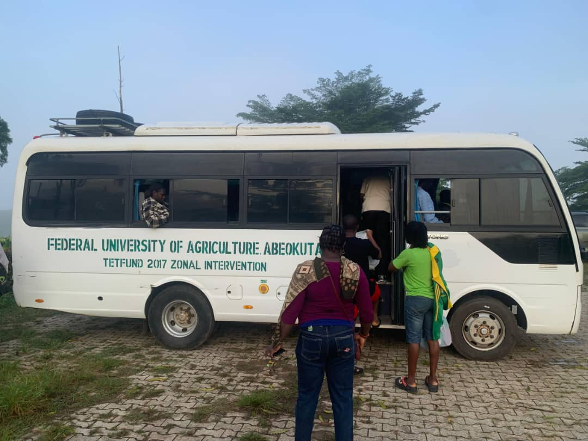
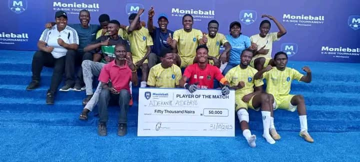
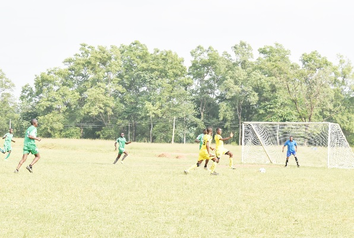
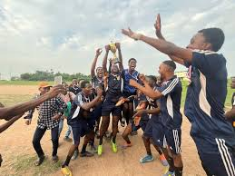

Catch all the latest sporting activities, competitions, and athletic achievements across FUNAAB!

FUNAAB Students Depart for NUGA Games in Jos
Excitement filled the air on campus as the FUNAAB sports contingent departed for the 2025 NUGA Games
in Jos, Plateau State, on the morning of November 4, 2025...
The team, comprising 46 student-athletes and 8 officials, will represent the university
in track and field, football, volleyball, chess, and table tennis.
Before their departure, the Vice-Chancellor addressed the athletes, urging them to uphold
discipline and sportsmanship. “FUNAAB has always stood for excellence both in the classroom and on the field,” he said.
The bus convoy left the university premises at 8:00 a.m., accompanied by cheers from fellow students.
According to the Sports Director, the athletes have been training intensely and are ready
to make the university proud.
“We’re going for gold,” said the football team captain confidently.
The NUGA Games are expected to run from November 5th to 14th, 2025.

FUNAAB Beats UI to Win Bronze at Monieball Tournament
As Player of the Match Bags ₦50,000 Cash Prize
It was a thrilling showdown in Lagos as the Federal University of Agriculture, Abeokuta (FUNAAB)
outclassed the University of Ibadan (UI) to clinch the Bronze Medal during the Third Place Match
at the just-concluded Monieball 5-Aside Football Tournament...
Team FUNAAB brought their A-game to the pitch, displaying resilience, sharp coordination, and
undeniable team spirit that kept fans on the edge of their seats. Their superb play earned them
praise from spectators and organisers alike, cementing their reputation as one of the competition’s
most formidable sides.
The spotlight shone brightly on Adebayo Adekanye, a student of Aquaculture and Fisheries
Management (AQFM), College of Environmental Resources Management (COLERM), who was named Best Player of
the Match. His dazzling performance and decisive plays earned him a ₦50,000 cash prize, rounding off
an outstanding tournament run.
Speaking after the victory, Dr. Samuel Olabanji, Director of Sports, expressed appreciation to the
Vice-Chancellor, Prof. Babatunde Kehinde, for his consistent support and encouragement. He also thanked
the University Community and fans for rallying behind the team throughout the competition.
The Monieball 5-Aside Tournament is an annual event that brings together universities across Nigeria,
using football as a platform to promote youth engagement, teamwork, and healthy rivalry.
With this victory, Team FUNAAB has once again demonstrated that the University’s sporting prowess
matches its academic excellence, proving that when it comes to passion, skill, and determination,
FUNAAB truly plays to win.
#SDG3

FUNAABSU Freshers’ Sports Competition Kicks Off This Month
The Students’ Union Sports Committee has announced that the annual Freshers’ Sports Competition
will begin later this month to welcome new students to campus life...
The event, scheduled to start on November 20, 2025, will feature football, athletics, table tennis, and volleyball.
According to the SU Sports Director, the competition is designed to help freshmen identify and develop their athletic potential
while encouraging teamwork and friendship.
Registration for various sports categories is open at the Student Union Building, and inter-departmental matches
are expected to draw huge crowds.
The finals will be played at the university’s main field, followed by a closing ceremony
and presentation of medals.

Inter-College Football League: Rivalries Intensify as Semi-Finals Approach
The ongoing Inter-College Football League has entered the semi-final stage,
with fierce competition among top-performing colleges...
College of Agricultural Management and Rural Development (COLAMRUD) remains unbeaten,
while College of Engineering (COLENG) secured a dramatic win to book their semi-final spot.
Matches have been drawing large student audiences, with the main field
buzzing every evening.
The final is expected to take place on November 25, 2025.
The Sports Unit has praised the spirit of sportsmanship and fair play shown
by all teams, noting that this year’s tournament has been the most exciting yet.
FUNAAB Female Volleyball Team Wins Friendly Match Against MAPOLY
The FUNAAB female volleyball team displayed outstanding performance as they defeated
Moshood Abiola Polytechnic (MAPOLY) in a friendly match played at the university sports complex...
The thrilling encounter ended 3–1 in favor of FUNAAB after four competitive sets.
Team captain, Blessing Daniel, expressed joy over their victory, stating that the match
helped strengthen team spirit ahead of future competitions.
The friendly was organized as part of the team’s preparation for upcoming inter-university tournaments.
According to the coach, the team is “ready to take on any challenge” as they continue their winning streak.